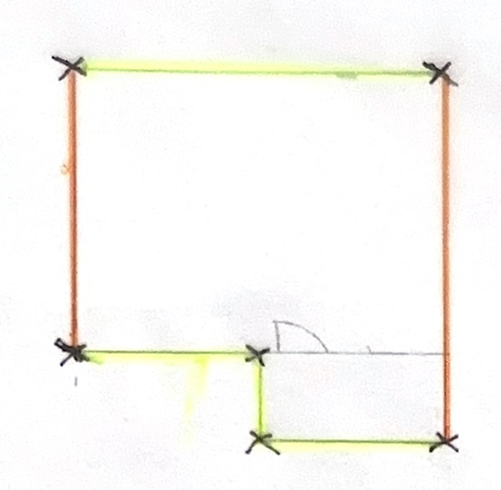
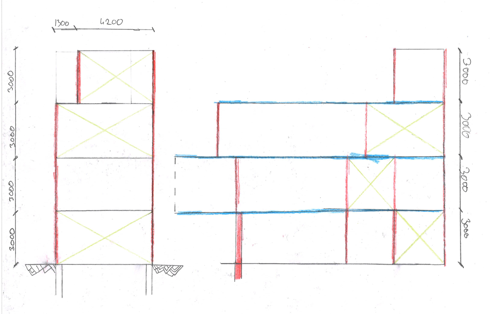
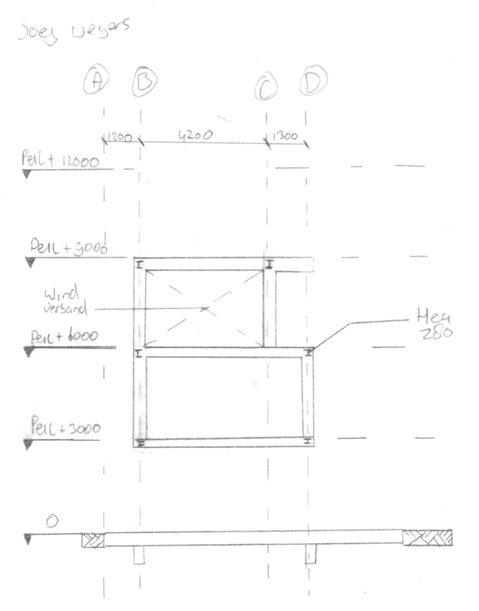
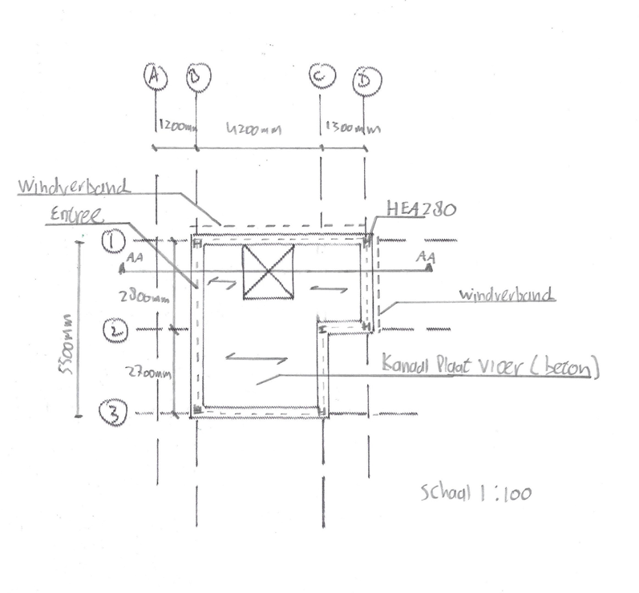
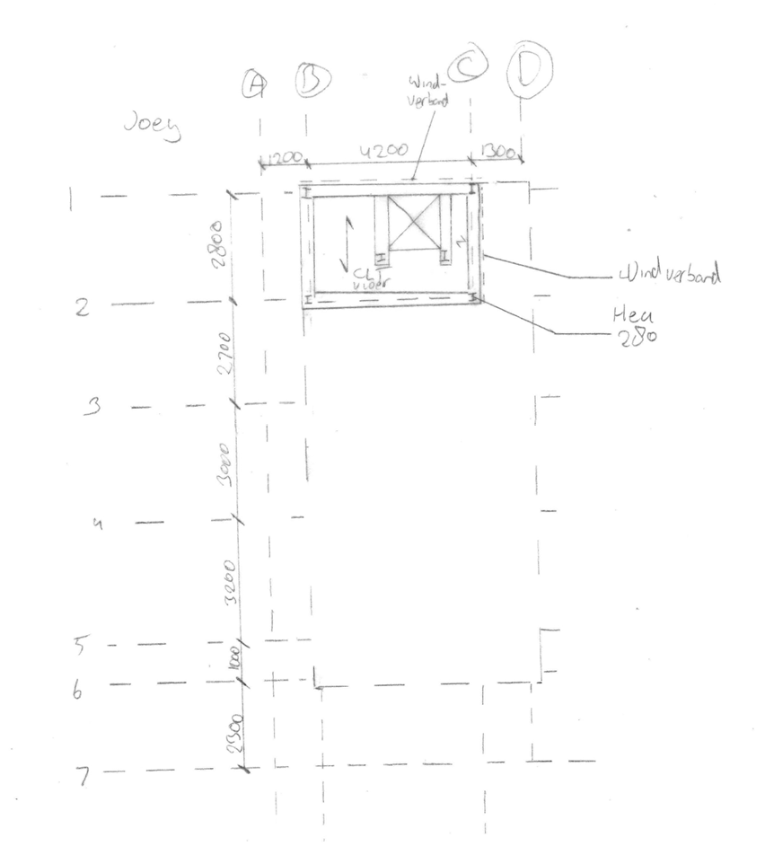
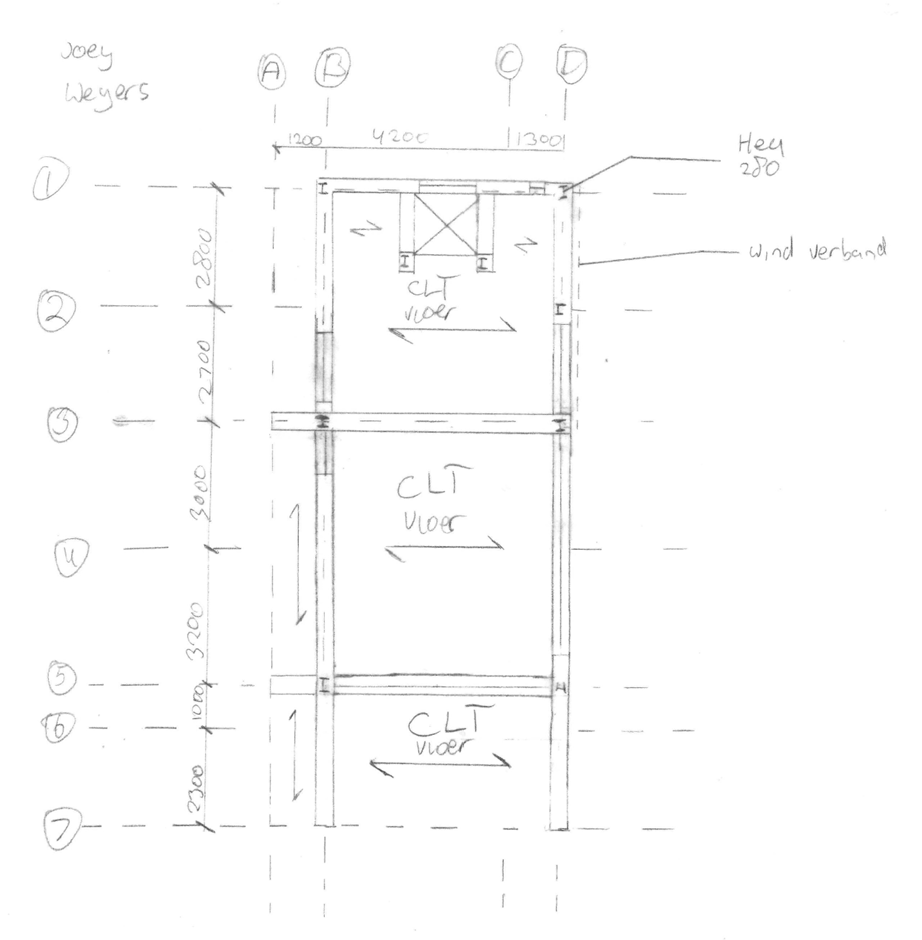
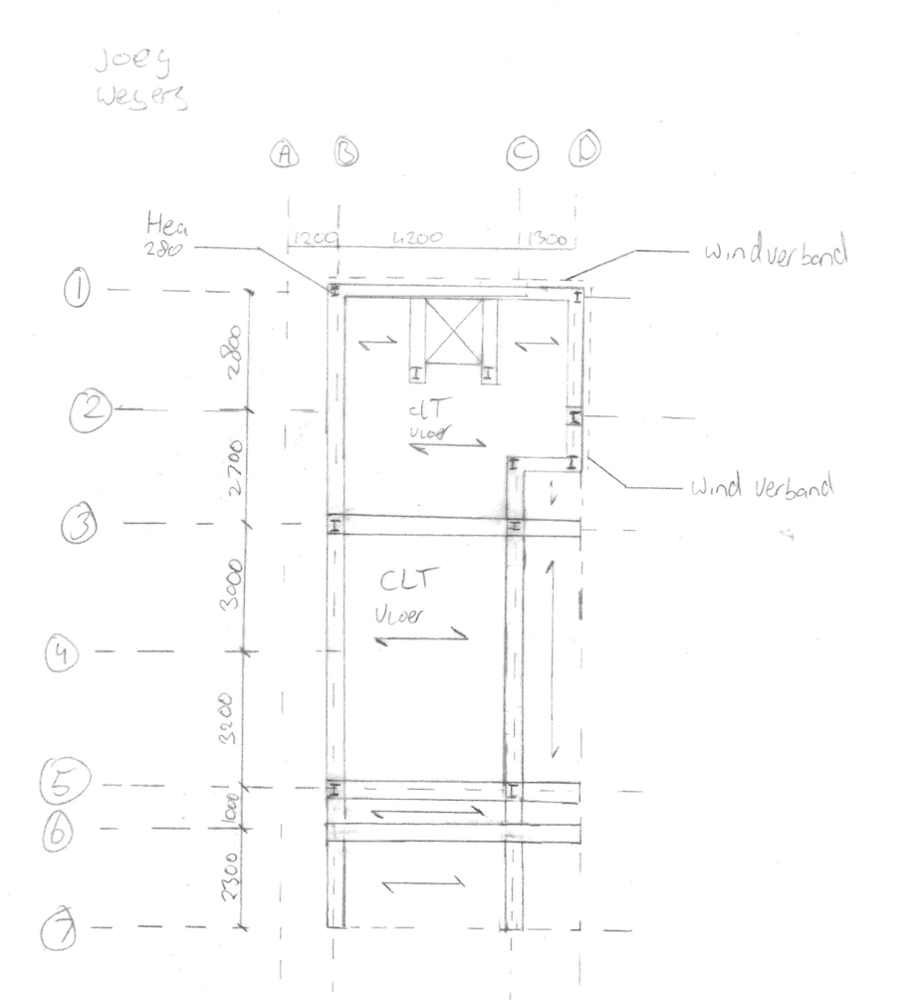
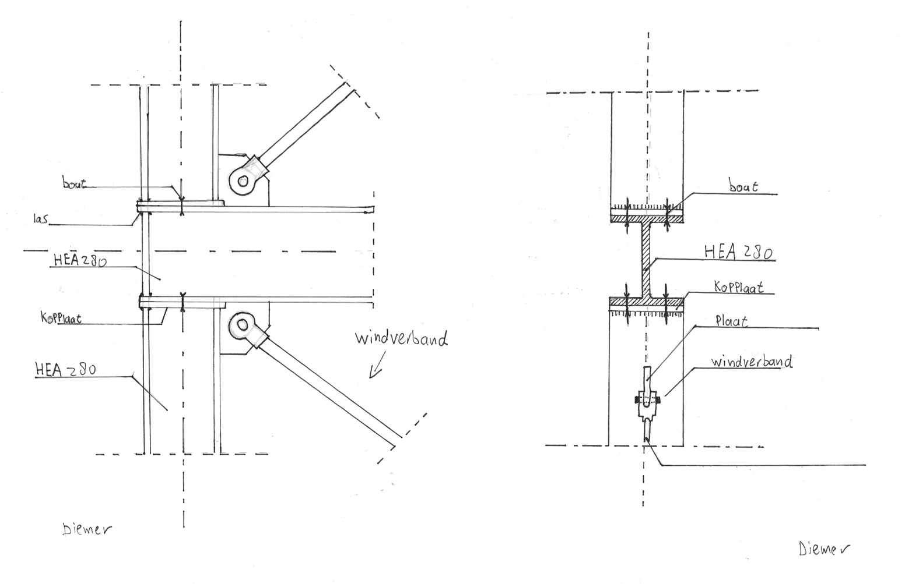
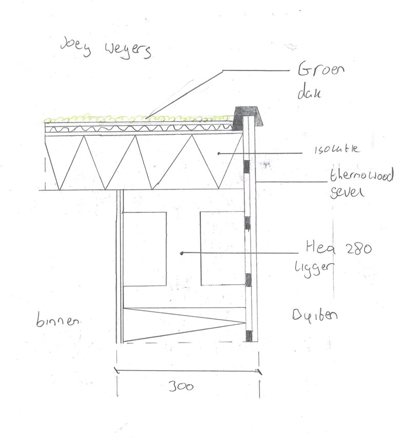

Kritische analyse constructief ontwerp
Project ARCO — Het Terrashuis | Kadewoning Kavel 16, Ringdijk Amsterdam
Student: Joey Weijers (500912309) & Diemer Klarenbeek (500984245) | Klas FT-BE-1A-03 | Blok 4, 2025–2026
Beoordeling op basis van tekeningen uit presentatie, opdracht 6.4
1. Verticale krachtsafdracht (opdracht 3.3)
De verticale krachtsafdracht is als eerste schets opgezet. Rode lijnen zijn kolommen,
gele kruizen zijn windverband. De opzet is begrijpelijk maar constructief onvolledig.

3.3 Verticale krachtsafdracht — schets Joey

4.2 Horizontale krachtsafdracht — kleurenschets Joey
Bevindingen:
- De kolommenschets (rood) toont een L-vormige plattegrond, maar de positie van de kolommen in de uitkraging boven het water is niet duidelijk.
- De horizontale krachtsafdracht (rechts) toont windverband (gele kruizen) in elk gevelvak — maar dit is alleen in de lengterichting van het gebouw. De dwarsrichting (haaks op de Ringvaart) ontbreekt volledig.
- Rode kolommen staan bij de balkons — dit is in strijd met de eerder gegeven docentfeedback dat "kolommen niet onder balkons mogen staan".
2. Constructiedoorsnede — 6.4 (Joey Weijers)
Dit is de meest kritische tekening van het project. De doorsnede moet de volledige constructieve opbouw
laten zien van fundering tot nok, inclusief vloersamenstelling, kolommen, liggers en windverband.

6.4 Constructiedoorsnede — Joey Weijers
Problemen in de doorsnede:
- Windverband in slechts één vak: Het windverband (X-kruis) is alleen getekend tussen peil+6000 en peil+9000. De verdieping eronder (peil+3000 t/m +6000) en de begane grond (0 t/m +3000) hebben geen windverband in de doorsnede. Dit maakt de krachtafdracht onvolledig.
- Uitkraging volledig afwezig: Het gebouw steekt boven het water uit, maar in de doorsnede is de uitkraging niet getekend. Juist daar zitten de grootste constructieve uitdagingen (momenten, kniklengte kolommen).
- Fundering onduidelijk: Alleen een horizontale balk bij peil 0 met twee schetsmatige palen, zonder maten, paallengte of paaldoorsnede. Uit de bodemanalyse bleek dat palen minimaal 13,5m lang moeten zijn — dit is nergens in de tekening terug te vinden.
- Stramienlijnen niet aaneenlopend: De doorsnede gebruikt stramienen A-D, maar de maten (1200 | 4200 | 1300 = 6700mm) komen niet overeen met het vlekkenplan en de plattegronden, waar de breedte 5500mm is.
- Peilmaten kloppen niet: Peil+3000 als begane grondvloer impliceert 3m verdiepingshoogte op BG, maar de plattegrond BG toont 2000 + 2700 = 4700mm in de andere richting — inconsistent.
3. Constructieplattegronden — 6.4 (Joey Weijers & Diemer Klarenbeek)
De constructieplattegronden tonen per verdieping de kolommen, liggers, vloerrichting en windverband.
Het grootste probleem zit in de inconsistentie van het windverband tussen de verdiepingen.
Begane grond (Diemer)

6.4 Constructieplattegrond BG — Diemer
- Windverband staat linksboven in het gebouwvlak (stramien A-B zijde).
- Kanaalplaatvloer is correct benoemd en vloerrichting is aangegeven.
- Maten 2000mm + 2700mm = 4700mm in de diepterichting — dit is minder dan de gestelde 5500mm kavelbreedte. Onduidelijk of dit incl. of excl. wanddikte is.
- Stramienlijnen 1-3 in de ene richting, A-D in de andere — maar in de doorsnede zijn er geen stramienlijnen 1-3, alleen A-D. Dit is inconsistent.
Eerste verdieping (Joey)

6.4 Constructieplattegrond 1e verdieping — Joey
- Windverband staat op andere positie dan BG — rechtsboven (stramien C-D zijde). Dit betekent dat er geen doorgaand windverbandvlak is van fundering naar dak. Horizontale windkrachten kunnen dan niet correct worden afgedragen.
- CLT vloer en HEA 280 correct benoemd.
- Stramienlijnen 1 t/m 7 lopen door het gehele kavel inclusief de dijk — dit is ongebruikelijk voor een constructieplattegrond en maakt de tekening onoverzichtelijk.
- Vloerrichting is aangegeven met pijlen, maar onduidelijk of dit de overspaningsrichting of de plaatsingsrichting is.
Tweede verdieping (Joey)

6.4 Constructieplattegrond 2e verdieping — Joey
- Windverband staat wederom op een andere positie dan de BG en 1e verdieping. Drie verdiepingen, drie verschillende windverbandposities — dit is constructief onjuist.
- CLT vloer correct, meerdere vloervakken getekend.
- De kolom die in het midden lijkt te staan (tussen stramien B en C) is onlogisch als daar ook een terras of vrije ruimte is gewenst.
Dak (Joey)

6.4 Constructieplattegrond Dak — Joey
- Windverband opnieuw anders gepositioneerd dan de onderliggende verdiepingen.
- Er zijn maar twee CLT vloervakken getekend — onduidelijk of dit het dakterras of een dakconstructie betreft.
- Geen dakrand, geen dakopbouw (EPDM, sedum) zichtbaar in de constructietekening.
4. Principe aansluitingen — 6.3

6.3 Principe aansluitingen — Diemer (kolom-ligger verbinding)
Positief:
- De kolom-ligger verbinding is herkenbaar: bout, las, kopplaat en windverbanddiagonaal zijn benoemd.
- Twee aanzichten getekend (perspectief en gevelaanzicht) — goed voor begrip.
Kritiek:
- Geen maten op de aansluiting — hoe groot is de kopplaat? Welke boutdiameter? Welke lasnaad?
- Het windverband is als een dunne diagonaal getekend zonder profielaanduiding (rondstaal? plaatstaal? hoekprofiel?).
- Schaal ontbreekt.

6.3 Principe aansluiting dakrand — Joey (schaal 1:5)
Positief:
- Schaal 1:5 is correct voor een detail.
- Dakopbouw (groen dak, isolatie, thermowood gevel) is herkenbaar.
- HEA 280 ligger en buiten/binnen zijn benoemd.
Kritiek:
- Geen maten op het detail.
- De aansluiting van de dakrand aan de gevel is niet uitgetekend — hoe sluit het sedumdak af tegen de gevel? Waar zit de EPDM afwerking?
- De isolatiedikte is niet benoemd, terwijl thermische isolatie een eis is uit het PvE (driedubbel glas, goede thermische isolatie).
5. Overzicht — constructieve fouten en aandachtspunten
| Probleem |
Locatie |
Ernst |
Uitleg |
| Windverband op andere positie per verdieping |
Plattegronden BG, 1e, 2e, dak |
Zwaar |
Geen doorgaand windverbandvlak = geen krachtpad van dak naar fundering |
| Windverband ontbreekt in één richting |
Alle plattegronden en doorsnede |
Zwaar |
Alleen in lengterichting, niet in dwarsrichting — gebouw is in één richting instabiel |
| Windverband niet in alle verdiepingen in doorsnede |
Doorsnede 6.4 |
Gemiddeld |
Alleen tussen peil+6000 en +9000 getekend, de rest ontbreekt |
| Uitkraging boven water niet getekend |
Doorsnede 6.4 |
Gemiddeld |
Constructief het meest uitdagende onderdeel, maar volledig afwezig in de doorsnede |
| Stramienlijnen inconsistent tussen tekeningen |
Doorsnede vs. plattegronden |
Gemiddeld |
Doorsnede: A-D, breedte 6700mm / Plattegrond: A-D + 1-7, breedte 4700mm |
| Fundering niet uitgewerkt |
Doorsnede 6.4 |
Gemiddeld |
Palen van 13,5m zijn aangetoond nodig (Dinoloket), maar niet in tekening verwerkt |
| Maten ontbreken op principe aansluitingen |
6.3 aansluitingen |
Licht |
Boutmaten, lasnaad, plaatdikte — niet benoemd |
| Kolommen mogelijk onder balkons |
Krachtsafdracht 3.3 / 4.2 |
Gemiddeld |
Docentfeedback week 3: kolommen mogen niet onder niet-dragende balkons staan |
Conclusie
Het constructieve concept van Het Terrashuis is inhoudelijk goed gekozen:
staalskelet met CLT-vloeren, betonnen begane grond en HEA 280 liggers is een
logische keuze voor dit type gebouw. De dimensionering via vuistregels (opdracht 5.3)
is correct uitgevoerd en goed gedocumenteerd.
De grootste zwakte zit in de uitwerking van het windverband. Op elke verdieping
staat het windverband op een andere positie, waardoor er geen doorgaand krachtpad bestaat.
Daarnaast is het windverband alleen in de lengterichting aangebracht — de dwarsrichting
(haaks op de Ringvaart) ontbreekt volledig. Voor een smalle, hoge woning die bovendien
uitkraagt boven water is dit een fundamentele constructieve tekortkoming.
De stramienlijnen lopen niet consistent door alle tekeningen, wat de integratie tussen
architectuur en constructie verzwakt. Dit is de directe oorzaak van de lage score op
BIM (3.5) en integratie (5.0) in de beoordeling.
Analyse gegenereerd op basis van presentatie "Project ARCO Joey Weijers en Diemer Klarenbeek FT-BE-1A-03 Blok4 15 juni 2026.pptx" en beoordelingsformulier d.d. 17-06-2026.